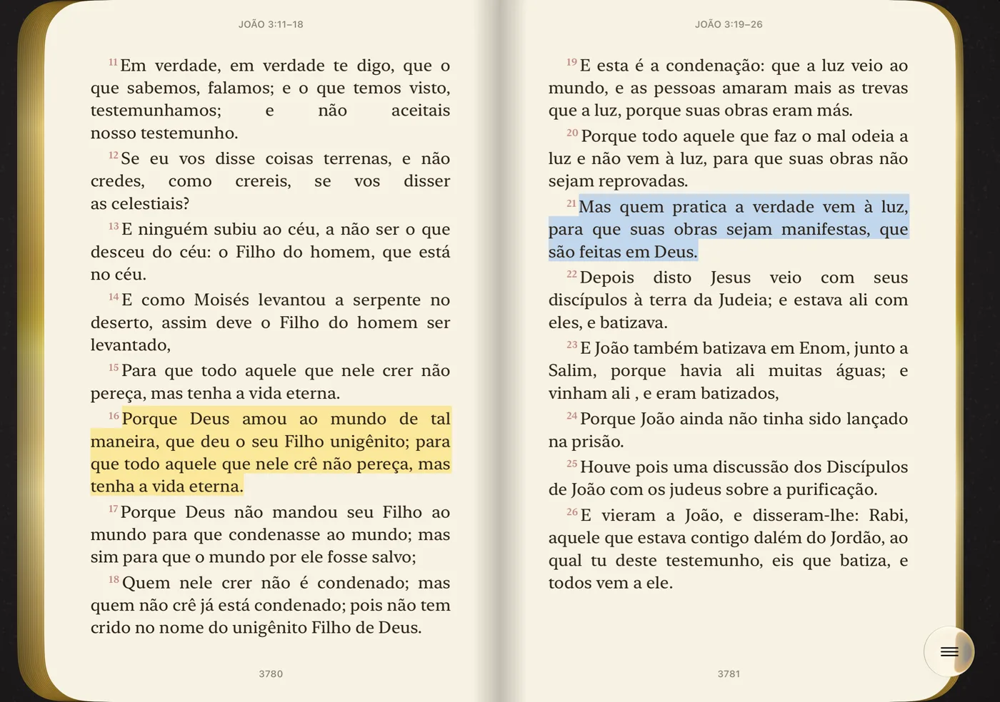
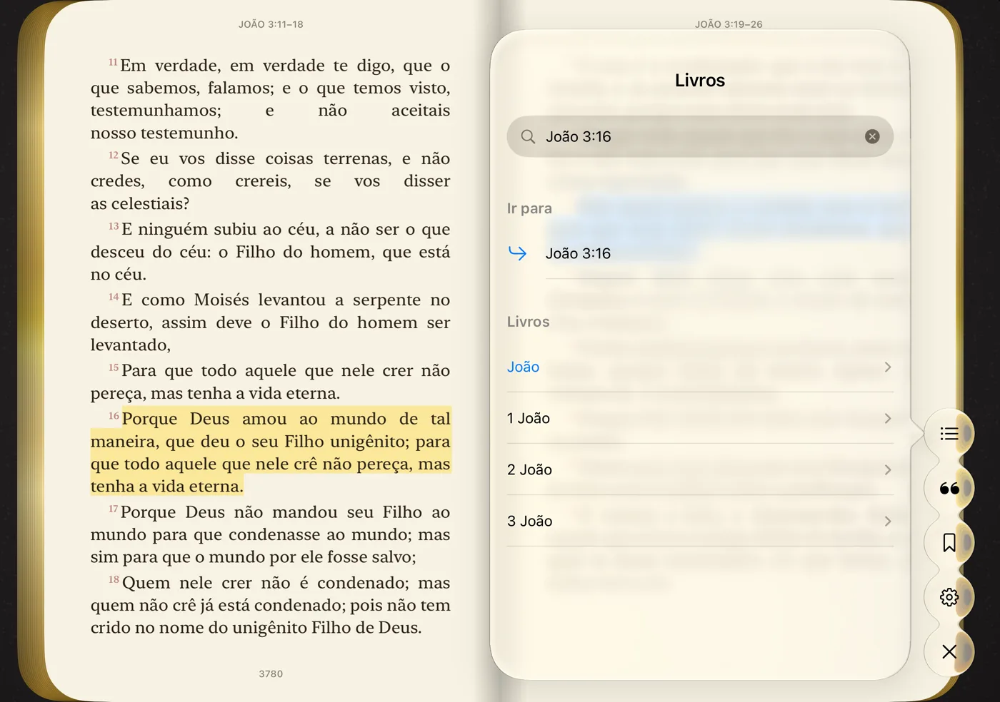

Fechado, a capa. Aberto, o livro.
Com o iPhone Duo fechado, a tela de fora mostra a capa de couro da sua Bíblia. Deslize para abrir e leia uma página de cada vez. Abra o Duo e a Bíblia aparece aberta em duas páginas, como aquela que fica na cabeceira.
Vire a página com o dedo
As folhas se curvam sob o dedo, com a luz e a sombra do papel. As bordas douradas mostram quanto você já leu, e uma fitinha de tecido guarda a página onde parou.
Destaque o que fala com você
Toque e segure uma palavra para destacar o versículo em uma de quatro cores. Cada destaque vira uma citação para reler e compartilhar.

Ache qualquer versículo
Os 66 livros e todos os capítulos, com busca. Digite João 3:16 e vá direto ao texto.

Do seu jeito
Quatro estilos de capa, seis cores de couro, seis ícones, tema claro e escuro e o tamanho de letra melhor para os seus olhos.
Sem internet e sem anúncios
Funciona no avião, na igreja e onde não há sinal. Sem anúncios e sem distrações.
Sua leitura é só sua
Não pedimos conta e não coletamos dados. Seus destaques ficam no seu iPhone.
Três traduções completas
- Português: Bíblia Livre, tradução baseada na Almeida
- English: King James Version (KJV)
- Español: Reina-Valera 1909
Antigo e Novo Testamento, os 66 livros. O idioma muda nos Ajustes.
Baixe a Bíblia Duo
Grátis na App Store. Feita só para o iPhone Duo, com iOS 27.1 ou posterior.